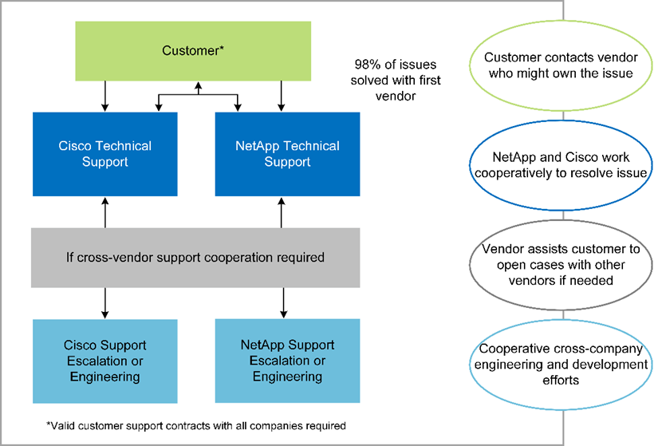

要求變更文件
要求變更文件 編輯此頁面
編輯此頁面 瞭解如何作出貢獻
瞭解如何作出貢獻將基因工作負載部署在FlexPod 架構上的優點
本節提供在FlexPod 融合式基礎架構平台上執行基因組學工作負載的簡短優點清單。讓我們快速說明一家醫院的功能。下列企業架構檢視顯示醫院部署在混合雲就緒FlexPod 的支援融合式基礎架構平台上的功能。
-
*避免醫療領域的孤立現象。*醫療產業的封閉環境確實令人擔憂。各部門通常會獨立於自己的硬體和軟體組合、而非選擇、而是透過演進來組織化。例如放射學、心臟科、EHR、基因組學、 分析、營收週期及其他部門最終會以各自專屬的軟體和硬體組合為基礎。醫療組織維持有限的IT專業人員來管理其硬體和軟體資產。這組人員必須管理一套非常多樣化的硬體與軟體、才是轉折點。廠商對醫療組織提出的一系列程序不一致、使得異質性更為嚴重。
-
「小而小」、「大」。「網關」工具套件專為CPU執行而設計、是FlexPod 最佳的套裝平台、例如：支援獨立擴充網路、運算和儲存設備。FlexPod從小規模開始、隨著基因組學功能和環境的成長而擴充。醫療機構不需要投資專門的平台來執行基因工作負載。相反地、企業組織可以運用FlexPod 諸如功能性的多元平台、在同一個平台上執行基因組學和非基因組學工作負載。例如、如果兒童部門想要實作基因組學功能、IT領導階層可以在現有FlexPod 的實例上配置運算、儲存和網路功能。隨著基因組學業務單位的成長、醫療機構可以FlexPod 視需要擴充其的階平台。
-
單一控制面板與無與倫比的靈活度。 Cisco Intersight將應用程式與基礎架構連結、提供從裸機伺服器與Hypervisor到無伺服器應用程式的可見度與管理、大幅簡化IT作業、進而降低成本並降低風險。這款統一化SaaS平台採用統一化的開放式API設計、原生可與協力廠商平台和工具整合。此外、它還能讓您使用行動應用程式、從現場或任何地方的資料中心營運團隊進行管理。
使用者可利用Intersight做為其管理平台、快速釋放環境中的實際價值。Intersight可針對許多日常手動工作實現自動化、消除錯誤並簡化日常作業。此外、Intersight所提供的進階支援功能可讓採用者在問題發生之前保持領先地位、並加速解決問題。結合使用、組織在應用程式基礎架構上的時間與金錢都會大減、而在核心業務開發上的時間也會更多。
善用Intersight管理和FlexPod易於擴充的架構、讓組織能夠在單FlexPod 一的支援平台上執行數個基因組工作負載、藉此提高使用率並降低總體擁有成本（TCO）。支援靈活調整規模、從我們的小型支援中心開始、即可擴充至大型的支援中心實作。FlexPod FlexPod FlexPod藉由Cisco Intersight內建的角色型存取控制功能、醫療機構可實作健全的存取控制機制、避免需要個別的基礎架構堆疊。醫療組織內的多個業務單位可以將基因組學視為關鍵核心能力。
最終的功能是協助簡化IT作業並降低營運成本、讓IT基礎架構管理員能夠專注於有助於臨床醫師創新的工作、而非只是為了維持營運不中斷。FlexPod
-
通過驗證的設計與保證成果 FlexPod 。*《整套設計與部署指南》已通過驗證、可重複使用、其中涵蓋完整的組態詳細資料、以及部署FlexPod 可靠的《整套解決方案》所需的業界最佳實務做法。Cisco與NetApp驗證的設計指南、部署指南與架構、可協助您的醫療或生命科學組織從一開始就不再猜測實作已驗證且值得信賴的平台。有了NetApp、您可以加快部署時間、並降低成本、複雜度和風險。FlexPod通過驗證的設計與部署指南、將此平台建立為各種基因組工作負載的理想平台。FlexPod FlexPod
-
創新與敏捷度 FlexPod 推薦使用Epic、Cerner、Meditech等EHRs、以及Agfa、GE、飛利浦等影像系統、作為理想的平台。如需詳細資訊、請參閱 "致勝榮譽" 以及目標平台架構、請參閱Epic使用者網路。在上執行基因組學 "FlexPod" 讓醫療組織能夠靈活地繼續創新之路。利用此功能、組織架構的改變自然就能實現。FlexPod當企業組織採用FlexPod 統一化的解決平台時、醫療IT專家就能撥備時間、精力和資源來進行創新、因此能夠靈活因應生態系統的需求。
-
資料解放 FlexPod 利用融合式基礎架構平台與NetApp ONTAP 支援儲存系統、您可以從單一平台、透過各種大規模的傳輸協定、提供並存取基因組學資料。NetApp支援的解決方案提供簡單、直覺且功能強大的混合雲平台。FlexPod ONTAP您的Data Fabric採用NetApp ONTAP 技術、可跨越實體界限、跨應用程式、將資料一起編織在各個站台之間。您的資料架構是專為資料導向企業打造、專為資料導向企業打造。資料是在多個位置建立和使用、通常需要運用資料、並與其他位置、應用程式和基礎架構共用。因此、您需要一致且整合的方式來管理IT。此功能可讓您的IT團隊掌控一切、並簡化不斷增加的IT複雜度。FlexPod
-
安全的多租戶共享 FlexPod 。*此功能使用FIPS 140-2相容的密碼編譯模組、因此組織能夠將安全性實作為基礎要素、而非事後考量。無論平台的規模為何、透過單一整合式基礎架構平台、均可讓組織實作安全的多租戶共享。FlexPod利用安全的多租戶共享和QoS、有助於將工作負載區隔、並將使用率最大化。FlexPod這有助於避免資金被鎖定在可能未充分利用的專業平台上、並需要一套專門的技能來管理。
-
*儲存效率。*基因組需要基礎儲存設備具備領先業界的儲存效率功能。您可以利用NetApp儲存效率功能來降低儲存成本、例如重複資料刪除（即時和隨需）、資料壓縮和資料壓縮（ "參考資料"）。NetApp重複資料刪除技術可在FlexVol 支援重複資料刪除的功能區塊層級進行重複資料刪除。基本上、重複資料刪除技術會移除重複的區塊、只會將獨特的區塊儲存在FlexVol 整個過程中。重複資料刪除技術的運作精細度極高、可在FlexVol 使用中的檔案系統上運作。下圖概述NetApp重複資料刪除技術的運作方式。重複資料刪除技術是應用程式透明的。因此、它可用於刪除任何使用NetApp系統的應用程式所產生的重複資料。您可以將磁碟區重複資料刪除當作內嵌程序執行、也可以當作背景程序執行。您可以將其設定為自動執行、排程執行、或透過CLI、NetApp ONTAP 還原系統管理程式或NetApp Active IQ Unified Manager 還原手動執行。

-
實現基因組互通性 ONTAP FlexCache 。效能不只是一種遠端快取功能、可簡化檔案發佈、減少WAN延遲、並降低WAN頻寬成本（ "參考資料"）。基因變異辨識與註釋期間的重要活動之一、就是臨床醫師之間的協同作業。即使協同作業的臨床醫師位於不同的地理區域、也能提升資料處理量。ONTAP FlexCache根據。BAM檔案的一般大小（1GB至100s GB）、基礎平台必須能為不同地理位置的臨床醫師提供檔案。利用此技術、基因資料與應用程式可真正做好多站台的準備、讓全球各地研究人員之間的協同作業無縫銜接、並具備低延遲和高處理量。FlexPod ONTAP FlexCache在多站台環境中執行基因組學應用程式的醫療組織、可以使用資料架構進行橫向擴充、以平衡管理與成本與速度。
-
智慧使用儲存平台。 FlexPod 利用ONTAP 功能不只自動分層、更採用NetApp Fabric Pool技術、簡化資料管理。可協助降低儲存成本、而不會影響效能、效率、安全性或保護。FabricPool不需重新建構應用程式基礎架構、即可降低儲存TCO、使企業應用程式透明化、並善用雲端效率。FabricPool利用NetApp的儲存分層功能、更有效率地使用介紹性快閃儲存設備、讓您受益匪淺。FlexPod FabricPool ONTAP如需詳細資訊、請參閱 "包含此功能的FlexPod FabricPool"。下圖提供FabricPool 關於支援及其效益的高階概述。

-
更快的變體分析和註釋。 FlexPod 此功能可更快部署及操作。此平台可讓臨床工作者以低延遲和提高處理量的規模提供資料、進而實現協同作業。FlexPod提升互通性、實現創新。醫療組織可以同時執行基因組和非基因組工作負載、這表示組織不需要使用專門的平台來開始基因組學之旅。
例行地將尖端功能加入儲存平台。FlexPod ONTAP支援支援以高效能儲存設備存取所需的應用程式、而VMware資料中心是部署FC-NVMe的最佳共享基礎架構基礎。FlexPod由於FC-NVMe的演進包括高可用度、多重路徑和額外的作業系統支援、FlexPod 因此很適合做為首選平台、提供支援這些功能所需的擴充性和可靠性。採用端點對端點NVMe的加速I/O技術、可讓基因組分析更快完成（ONTAP "參考資料"）。
循序原始基因組資料會產生較大的檔案大小、因此這些檔案必須提供給變體分析程式、以減少從取樣收集到變體註釋所需的總時間。NVMe（非揮發性記憶體Express）可做為儲存存取和資料傳輸傳輸傳輸傳輸傳輸協定、提供前所未有的處理量等級和最快的回應時間。透過PCI Express匯流排（PCIe）存取Flash儲存設備時、可部署NVMe傳輸協定。FlexPodPCIe可實作數萬個命令佇列、增加平行處理和處理量。從儲存設備到記憶體的單一傳輸協定、讓資料存取更快速。
-
*從一開始就能靈活地進行臨床研究。*靈活、可擴充的儲存容量與效能、可讓醫療研究機構以靈活或即時（JIT）的方式最佳化環境。藉由將儲存設備與運算和網路基礎架構分離、FlexPod 可在不中斷營運的情況下、將其橫向擴充。利用Cisco Intersight FlexPod 、可透過內建和自訂的自動化工作流程來管理此支援平台。Cisco Intersight工作流程可讓醫療組織縮短應用程式生命週期管理時間。當學術醫療中心要求將病患資料匿名、並提供給其中心以供研究資訊和/或中心品質之用時、其IT組織可利用Cisco Intersight FlexPod 流程、在數秒內（而非數小時）完成安全的資料備份、複製及還原。有了NetApp Trident和Kubernetes、IT組織就能在幾分鐘內配置新的資料科學家、並將臨床資料提供給模型開發、有時甚至只需幾秒鐘。
-
保護基因組資料。 NetApp SnapLock 供應特殊用途的磁碟區、可將檔案儲存並承諾為不可擦除、不可重寫的狀態。使用者的資料駐留FlexVol 在一個SnapMirror Volume中、可透過SnapLock NetApp SnapMirror或SnapVault SnapMirror技術鏡射或將其保存至一個SnapMirror Volume。在保留期間結束之前、無法刪除位於現象磁碟區中的檔案SnapLock 、磁碟區本身及其託管Aggregate。使用VMware FPolicy軟體組織可以禁止對具有特定副檔名的檔案執行作業、藉此防止勒索軟體攻擊。ONTAP可針對特定檔案作業觸發FPolicy事件。此事件與原則有關、該原則會呼叫IT需要使用的引擎。您可以使用一組可能含有勒索軟體的副檔名來設定原則。當副檔名不允許的檔案嘗試執行未獲授權的作業時、FPolicy會防止該作業執行 ("參考資料"）。
-
《合作支援》 NetApp與Cisco已建立一套強大、可擴充且靈活的支援模式《支援》、以符合獨特的支援需求、滿足融合式基礎架構的需求。FlexPod FlexPod FlexPod此模式結合了NetApp與Cisco的經驗、資源和技術支援專業、提供簡化的程序來識別FlexPod 及解決不受問題影響的支援問題。下圖概述FlexPod 了《不合作支援》模式。客戶與可能擁有此問題的廠商聯絡、Cisco與NetApp合作解決此問題。Cisco與NetApp擁有跨公司的工程與開發團隊、可攜手解決問題。此支援模式可減少翻譯期間的資訊遺失、實現信任、並減少停機時間。
